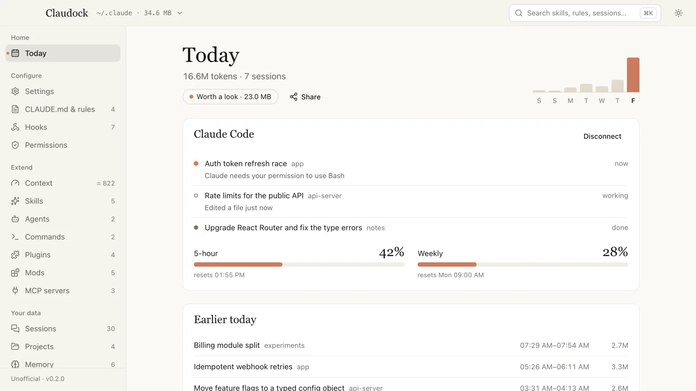
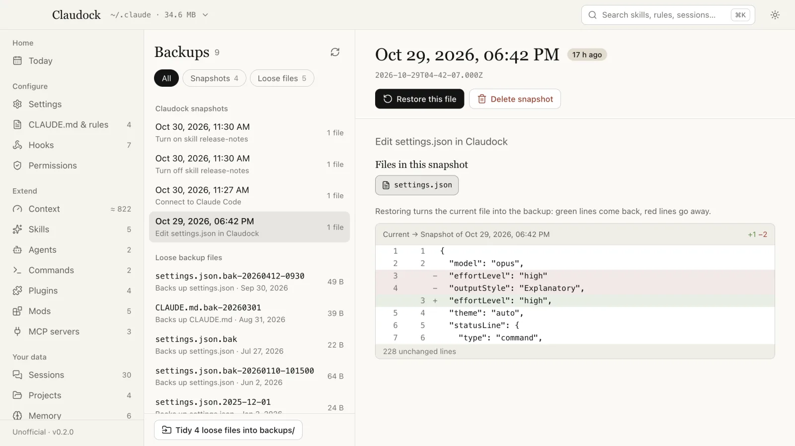

See inside your ~/.claude.
$ npx claudock




Install
-
npx
$ npx claudockNode 22.12+
-
Install script
macOS, Linux
$ curl -fsSL https://behkha.github.io/claudock/install.sh | shWindows
> irm https://behkha.github.io/claudock/install.ps1 | iex -
Installers
Mac Apple silicon Mac Intel Windows Linux AppImage Linux .deb
- macOS
- Open it once, click Done, then Open Anyway in System Settings › Privacy & Security. If macOS says the app is damaged, run
xattr -dr com.apple.quarantine /Applications/Claudock.app. - Windows
- Click More info, then Run anyway.
Safe by design
- Snapshot before every writeSaved outside
~/.claude. Diff and restore from Backups. - Atomic writesTemp file, then rename. JSON is validated first.
- Trash, not deleteDeletes go to the OS Trash.
- Never reads credentials
.credentials.jsonandsessions/*.keyshow as locked rows.
Try it on a fake config first
Node 22.12+ and git
git clone https://github.com/behkha/claudock.git
cd claudock
npm install
npm run dev